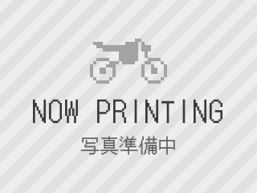

趣味の部屋
★隠しページへようこそ！★
よくぞ見つけてくださいました(^^)v
ここは管理人の趣味の部屋です。研究とは関係ありません。
※このページのことはナイショにしておいてくださいね。
■ 愛車遍歴
これまで乗ってきた13台を古い順に並べています。写真をクリックすると大きくなります。
1台目
| 車種 | クレアスクーピー |
|---|---|
| メーカー | ホンダ |
| 排気量 | 50cc |
| 時期 | 2006年〜2007年 |
| コメント | 初代ジョルノの後継モデルで丸みが基調の可愛いスクーター。 高校生の頃に購入しました。現行ジョルノの復活によって廃版になりました。 プーリーやベルト交換、ハイグリップタイヤにカスタムして神奈川の山々に行ったのは懐かしい想い出です。 |
2台目
| 車種 | JAZZ |
|---|---|
| メーカー | ホンダ |
| 排気量 | 75cc（ボアアップ） |
| 時期 | 2006年〜2007年 |
| コメント | ホンダのマグナ50よりも前のアメリカンのモデルのバイクです。50ccのところ75ccにボアアップして、チョッパースタイルのハンドルになっていました。とても制動が悪く、雨の日に交差点でスリップして危うくトラックにひかれるところでした。 |

3台目
| 車種 | 中華系スクーター（ジョーカー50風） |
|---|---|
| メーカー | 不明 |
| 排気量 | 80cc |
| 時期 | 2007年 |
| コメント | ジョーカー50に似た中華系の輸入バイクです。排気量はなぜか原付2種相当でした。 ある日スロットルが戻らなくなり、目の前が交差点で赤信号なので、急ハンドルで隣の墓地に突っ込み中破して廃車になりました（墓地は無事でした）。 |
4台目
| 車種 | ビラーゴ |
|---|---|
| メーカー | ヤマハ |
| 排気量 | 250cc |
| 時期 | 2008年〜2011年 |
| コメント | ヤマハのドラッグスター250以前に販売されていたVツインエンジンを搭載した250ccアメリカンのビラーゴです。ドラッグスターはロー＆ロングなスタイルですが、ビラーゴはチョッパースタイルに近い軽やかなスタイルでした。当時は大学生で資金難で最新のバイクが買えないという裏事情がありましたが、とても良いバイクで学部生のころ主に神奈川周辺を乗ることが多かったです。 |
5台目
| 車種 | チョイノリ |
|---|---|
| メーカー | スズキ |
| 排気量 | 50cc |
| 時期 | 2008年〜2011年 |
| コメント | 実家に置いてあったチョイノリでしたが、たぶんほぼ乗らずに3年ほどで廃車に。コンパクトでした。 |
6台目
| 車種 | アドレスV110 |
|---|---|
| メーカー | スズキ |
| 排気量 | 110cc |
| 時期 | 2008年〜2021年 |
| コメント | アドレスV125ではなく2ストのアドレスV110。加速はもちろん装備も充実していて通勤快速という名前で呼ばれていたそうです。神奈川県、東京都、茨城県、東京都、埼玉県と各地を旅してきましたが、最期は市営駐輪場で心無い人に解体されて部品を色々持っていかれて廃車になりました。 |
7台目
| 車種 | CBR250RR（MC22） |
|---|---|
| メーカー | ホンダ |
| 排気量 | 250cc |
| 時期 | 2014年〜2016年 |
| コメント | 1990年に発売された旧CBR250RR（MC22）愛称：ニダボです。 発売当時少年の私はこの車体を良く見かけていて記憶に刷り込まれていたのかもしれません。当時らしいとてもスポーティーで楽しい車体でした。引っ越しに伴い、マンションに駐輪場がなくなってしまい泣く泣く手放しました。 |
8台目
| 車種 | バーディー |
|---|---|
| メーカー | スズキ |
| 排気量 | 50cc |
| 時期 | 2016年〜2019年 |
| コメント | スーパーカブのような見た目ですが、転勤して実家用に地元のバイク屋さんで購入したスズキのバーディーです。 元所有者が低速でたまにしか乗らなかったそうで、排気ガスがキツかったのが想い出です。いつの間にか処分されてしまいました。 |
9台目
| 車種 | ゼルビス |
|---|---|
| メーカー | ホンダ |
| 排気量 | 250cc |
| 時期 | 2016年〜2018年 |
| コメント | ご存じない方も多いと思いますが、ホンダのVTシリーズの7代目のモデルです。前のモデルはスパーダでネイキッドに対して、こちらのゼルビスは大型のフルカウルで400 cc並みのサイズです。 堅牢で低・中回転域のトルクがあり、街乗りでもツーリングにも良いバイクでした。ただ、不人気者だったようで余り市場に車体もパーツも出回っていませんでした。こちらはゼルビス好きの友人（2台乗り継いだ）から譲ってもらったもので、引っ越しに伴いまたバイクがおけなくなってしまって、別の友人に譲りました。 |
10台目
| 車種 | スーパーカブ110 |
|---|---|
| メーカー | ホンダ |
| 排気量 | 110cc |
| 時期 | 2021年〜2023年 |
| コメント | 皆様ご存じスーパーカブ、説明不要ですね。大学4年間寿司屋の配達のバイトでもお世話になりました。 ゼルビスを譲ってくれた友人に譲ってもらいました。歩いて30分くらいの駐輪場においていたので乗る機会があまりなくて残念でした。 |
11台目
| 車種 | GFR-02 |
|---|---|
| メーカー | glafit（グラフィット） |
| 排気量 | 50cc相当（電動） |
| 時期 | 2022年〜2025年 |
| コメント | 見た目は自転車の電動原付。 日本初のモビチェンという「原付一種」と「自転車」の車両区分をその場で切り替えて（停止して電源を切ったうえで切り替え）走行できる画期的な乗り物でした。とても便利で良かったのですが、パワー不足と近所の交通量の多い道路では少し不安でした。 |
12台目 現在の相棒
| 車種 | ST250 |
|---|---|
| メーカー | スズキ |
| 排気量 | 250cc |
| 時期 | 2023年〜現在 |
| コメント | スズキのレトロなスタイルのシンプルなバイクです。シンプルですけどとても完成されていて、軽くて燃費も良いと街乗りではとても安定感ありつつ楽しいライドができます。タコメーターも燃料計もありません、こういうの良いですよね。 |
13台目 現在の相棒
| 車種 | Ninja e-1 |
|---|---|
| メーカー | カワサキ |
| 排気量 | 125cc相当（電動） |
| 時期 | 2025年〜現在 |
| コメント | カワサキのNinjaの電動バイクです。125 cc相当なのですが、電動なので加速は400 ccに近いものがあり、車体も400 cc相当と大きいです。 この見た目でオートマ（原付のような）は面白いですね。 とても静かで夏でもエンジンの熱で熱くならないのは良いです。 |
※ナンバープレートと写り込んだ人はぼかしています。写真がない台は NOW PRINTING のままです。